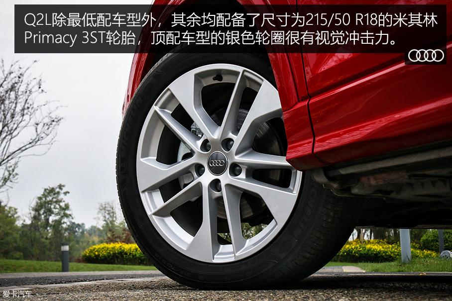
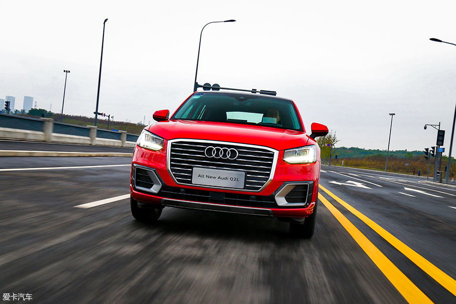

没有quattro，依然姓“Q” 爱卡试驾Q2L
爱卡 2018-10-14说到Q2L，我已记不清这是自己开过的第几台“1.4T+7挡双离合”车型，从发动机启动瞬间的声音，到初踩油门的动力迟滞，再到涡轮起转后的干脆爆发，Q2L依然具备“EA211+DQ200”的强烈属性。Q2L与我开过的任何一台同动力车型都不一样，下面我来说说这台Q家族老幺的独特之处。
首先最特殊的是转向手感，Q2L全系标配了可变转向比，并且能在不同驾驶模式下调节转向力度。所以在驾驶Q2L低速掉头时会觉得方向盘轻飘无力，且仅需一圈左右就能将方向打满。而当车速升高或切换至动态模式后，方向盘会明显变沉，转向比也越来越小，整个变化过程毫无突兀感。
其次，从变速箱标定到底盘调校，Q2L都达到了MQB A级平台空前的平顺与舒适。再加上这辆Q2L选装了驾驶模式控制，切换至E挡后，能在坡度小于8%的路面激活滑行功能，这样在下坡时不仅更加平顺，还能提高燃油经济性。
虽然现阶段的Q2L仅有前驱车型，但它依然是有名有份的Q系列成员。因为在我看来，奥迪Q系列的核心宗旨早已不再是抓地或者越野，而是用丰富的SUV车系覆盖一种生活态度。Q2L能将你从A点舒适地送达B点，偶尔还能小打一针鸡血，或者应付轻口味非铺装路面，那它就是一台合格的奥迪Q系列。
1980年，奥迪高管皮耶希脑洞大开，将lltis越野车的四驱系统移植到了奥迪80上。于是第一辆 quattro 车型横空出世，同时也改写了奥迪的命运。25年后，奥迪以quattro的首字母“Q”创立了全新的SUV系列，并用Q7开启了豪华SUV的新征程。时过境迁，Q7依然是奥迪的SUV旗舰，但Q系列的入门车型却在不断下探。继Q5与Q3之后，奥迪又将Q2带入了我们的视线。而就在昨天，国产并加长后的 一汽-大众奥迪 Q2L正式上市，而我也与这位Q家族老幺相处了整整一天，下面请听我慢慢讲解。
在欧洲，Q2是基于MQB A0级平台打造的全新SUV，但来到中国后不得不“入乡随俗”，与探歌、 柯珞克 一起加长，摇身一变成为A级SUV。而在动力方面，Q2欧版车型共有六种动力配置，其中包括三款汽油车型与三款柴油车型。一汽-大众奥迪目前只引进了1.4TFSI+DQ200+前驱的成熟动力组合，所以国内消费者短期内将无缘四驱版Q2L。至于它在不久的将来还会推出哪些动力，可以参考下表YY一番。


内饰神似A3，配置丰富
空间合情合理
其余储物格也很给力，并且内部容积丝毫没有打折。
动力够用，主打舒适

我对 奥迪 的试驾车总是又爱又恨，爱在它舒适、轻松，上手3min就能预判出90%的驾驶感受；恨在奥迪这两年的新车越来越同质化，必须仔细感知个中差异，才能避免文章与之前的雷同。说到这台Q2L，我已记不清这是自己开过的第几台“1.4T+7挡双离合”车型，从 发动机 启动瞬间的声音，到初踩油门的动力迟滞，再到涡轮起转后的干脆爆发，Q2L依然具备“EA211+DQ200”的强烈属性。但是，Q2L与我开过的任何一台同动力车型都不一样，下面我来说说这台Q家族老幺的独特之处。

首先最特殊的是转向手感，Q2L全系标配了 可变转向比 ，并且能在不同驾驶模式下调节转向力度。所以在驾驶Q2L低速掉头时会觉得方向盘轻飘无力，且仅需一圈左右就能将方向打满。而当车速升高或切换至动态模式后，方向盘会明显变沉，转向比也越来越小，整个变化过程毫无突兀感。
其次，从变速箱标定到底盘调校，Q2L都达到了MQB A级平台空前的平顺与舒适。这台DQ200变速箱比我体验过的任何一台都佛系，其平顺度甚至超越了探歌280TSI的DQ381。再加上这辆Q2L选装了驾驶模式控制，切换至E挡后，能在坡度小于8%的路面激活滑行功能，这样在下坡时不仅更加平顺，还能提高燃油经济性。
底盘方面，Q2L仅保留了基本的韧性，以至于车身在高速变线时不够稳定，没有了 奥迪车 型惯有的超强安全感。但这样的设定换来了更强的滤震性能，也更加符合消费者的日用需求。最后在风噪及隔音方面，Q2L的表现也无可挑剔，总的来说，这就是一台定位家居的休闲SUV
编辑点评：虽然现阶段的Q2L仅有前驱车型，但它依然是有名有份的Q系列成员。因为在我看来，奥迪Q系列的核心宗旨早已不再是抓地或者越野，而是用丰富的SUV车系覆盖一种生活态度。对于财力雄厚的人来说，买一辆Q7这样的全能车型保驾护航当然合适。但对于资金有限，又想体验生活的颜控消费者来说，有没有 quattro 系统已经不重要了。Q2L能将你从A点舒适地送达B点，偶尔还能小打一针鸡血，或者应付轻口味非铺装路面，那它就是一台合格的奥迪Q系列。（图：和雨韬/文：和雨韬）